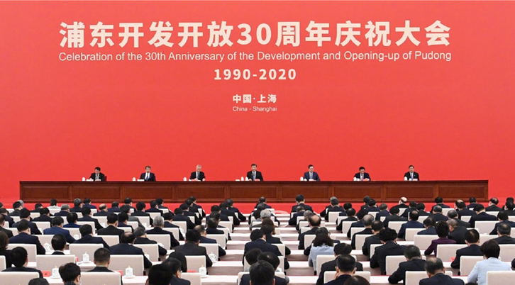
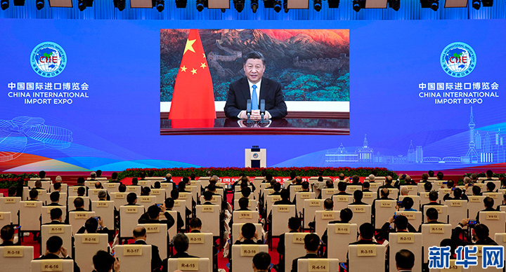
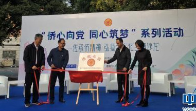
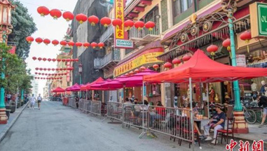
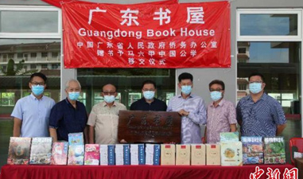
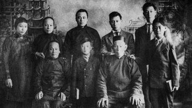

繁体中文
首 页
要闻动态
政务公开
政务服务
互动交流
侨乡侨社
侨务动态
|
政声传递
公开指南
|
公开目录
|
公开年报
|
依申请公开
|
政策法规
|
政策解读
|
公告公示
|
人事信息
办事指引
|
我要咨询
|
主任邮箱
|
下载服务
结果反馈
|
回复选登
|
侨务访谈
|
网上调查
|
民意征集
魅力广东
|
投资广东
|
开放广东
|
地方侨务
|
今日侨乡
|
慈善公益
|
侨社新闻
|
文化教育
|
寻根报道
要闻动态
政声传递
华侨华人点赞中国“十三五”：实干兴国，实利惠民
汕头华侨试验区多元探索凝侨心聚侨力护侨益
南方+华侨试验区频道正式上线
潮州古城观新潮：历史与现代交织 城市文脉延续传承
暨大携手深圳前海，打造四大平台助港澳台侨圆梦
广东基本形成涉侨法规政策体系 保护归侨侨眷权益
港澳同胞、海外侨胞、留学归国人员畅谈如何融入“双区”建设 到大湾区创新创业渐成风潮
《侨务政策法规问答》和《侨务工作知识问答》出版
为脱贫攻坚贡献侨力量
侨文化在“侨”文章中的分量有多重？
外交部：截至11月10日已从92个国家接回7万多名中国公民
李克强主持召开国家科技领导小组会议
省委常委会召开会议 认真学习贯彻习近平总书记在全国劳动模范和先进工作者表彰大会上的重要讲话精神 李希主持会议
李希到汕尾调研 全力推动新发展阶段汕尾高质量发展 努力建设沿海经济带的靓丽明珠
中共广东省委十二届十二次全会12月13日至14日在广州召开
王毅同美中贸易全国委员会董事会代表团举行视频交流
赵克志在国家反诈中心调研
国务院关于同意将辽宁省辽阳市列为国家历史文化名城的批复
韩正将与新加坡副总理王瑞杰共同主持召开中新双边合作机制会议
省精神文明建设委员会召开全体会议 以更高政治站位更有力工作举措 推动精神文明建设在新起点上实现更大发展 李希主持会议并讲话
广东省与中央企业合作发展座谈会暨战略合作框架协议签约活动在广州举行 全力抓好合作协议落地落实推动广东与央企战略合作再上新水平 李希出席会议并讲话 马兴瑞主持会议
广东江西两省举行工作座谈共商合作发展 李希刘奇马兴瑞王伟中参加有关活动

浦东开发开放30周年庆祝大会隆重举行 习近平发表重要讲话

习近平在第三届中国国际进口博览会开幕式上发表主旨演讲
中国共产党第十九届中央委员会第五次全体会议公报
习近平在广东考察时强调 以更大魄力在更高起点上推进改革开放 在全面建设社会主义现代化国家新征程中走在全国前列创造新的辉煌
1
2
3
4
政务公开
公开指南
公开目录
公开年报
依申请公开
政策法规
政策解读
关于华侨回国定居办理工作的实施办法
侨法颁布30周年丨涉侨法律政策指南
关于报考普通高校入学考试的“三侨生”证明办理规定
关于调整华侨华人和港澳同胞申办私人小汽车入出内地行驶牌证有关手续的通知
关于开展外籍和港澳台高层次人才认定工作的通知
关于华侨学生在我省接受高中阶段教育的实施办法
广东省华侨捐赠兴办公益事业管理条例
广东省华侨权益保护条例
12月起，这些新规将影响华侨华人的生活
11月新规来了！影响侨胞们的生活和出行
华侨华人能继承农村宅基地使用权吗？
归侨侨眷权益保护法颁布三十周年，这部法律你知多少？
归侨侨眷、留学人员回国就业？这些便利别错过！
一图看懂：归侨侨眷出境探亲，可以享受这些待遇！
侨务法学专家：侨务领域立法应与时俱进，更接地气
侨法30年图解系列丨超全面的侨胞婚姻指南！
公告公示
人事信息
关于征求《关于报考普通高校入学考试“三侨生”身份确认工作规定（征求意见稿）》意见的通知
《广东华侨史》编修工作领导小组办公室拟聘用人员名单公示
广东华侨博物馆2019年公开招聘合同制人员公告
《广东华侨史》委托项目协议书公示
“同心七十年”统战知识有奖竞答活动（第五期）获奖名单
广东华侨博物馆2019年“5·18国际博物馆日” 活动预告
关于广东华侨博物馆馆徽征集投票的通告
《广东华侨史》委托项目协议书公示
关于庞国梅、雷彪同志职务任免的通知
关于黎静同志免职的通知
关于雷彪同志任职的通知
关于李心同志免职的通知
关于陈锋同志任职的通知
雷彪同志任广东省侨办党组书记、副主任
服务·互动
我要咨询
主任邮箱
下载服务
办事指引
华侨回国定居办理
报考普通高校入学考试的“三侨生”证明办理
归侨、侨眷身份证明办理
关于提供为侨法律服务的公告
2020年7月至12月
结果反馈
回复选登
林*香关于三侨生问题的咨询（2022号）已回复，请查收。
伍*丽关于办理三侨生证的咨询（2021号）已回复，请查收。
钟小姐关于办理三侨生证的咨询（2020号）已回复，请查收。
谭女士关于三侨生证明的咨询（2019号）已回复，请查收。
三侨生
有关办理三侨生的咨询
办理三侨生证
归侨的外孙可以开三侨生证明吗？
侨务访谈
网上调查
省侨办主任庞国梅接受广东侨网访谈
就海外侨胞、港澳同胞与广东改革开放40年、新时代广东侨务工作发展等问题接受了广东侨网访谈。
您认为下一步我省侨捐工作要重点做好哪些方面工作？
广东侨网将进行改版，您认为要加强哪些版块？
您认为广东侨务外宣要多介绍哪些情况？
您最希望通过广东侨网了解哪些内容
加强华侨权益保护，您最关心的是哪些方面？
2014年广东侨务十件大事网上评选
侨乡·侨社
魅力广东
投资广东
开放广东
地方侨务
今日侨乡
慈善公益

【惠州】广东惠州建成225个基层侨联组织与19个“侨胞之家”
【汕头】创业中华·“十四五”中国发展与华侨华人投资创业峰会蓄势待发
【佛山】佛山南海区凝聚港澳台侨力量助力高质量发展
【汕头】潮汕华侨历史博物馆计划2021年建成开放
【河源】助力“万绿河源”走向世界——访北美河源同乡会共同会长郑国祥
【河源】“青年同心·改变未来”市侨联协助香港观澜同乡会开展爱心助学
【河源】多国侨领和外国朋友到访我市
粤港澳近200位艺术家合演“粤剧教科书”
深圳前海深港青年梦工场二期项目12月7日正式启用
佛山桑园围入选世界灌溉工程遗产名录
佛山“粤菜师傅”助力家乡味道走出国门
广州花都华侨农场:流溪河畔侨心暖
江门五丰村：写好美丽乡村“侨文章”
粤东唯一！潮州这个地方获评广东首批家教家风实践基地
香港慈善家2020年继续在内地开展侨心救护车捐赠项目
河源市向马来西亚亚庇市捐助一批防疫物资
乡贤谭育良主持贷学金发放仪式时勉励学子 学有所成报效华人社团及乡亲
4商会助力梅州籍学子圆梦 26名优秀学子得到奖励
古润金：助力扶贫让海外华商与祖（籍）国心贴得更近
广东省侨心慈善基金会第四届理事会换届大会圆满召开
广东知名侨企向马来西亚政府捐赠100万只口罩
侨社新闻
文化教育
寻根报道

一年将过，疫情未走，各国唐人街都怎么样了？
加拿大多伦多知名侨领林立辞世
驻毛里塔尼亚使馆召开在毛侨胞防疫工作视频会议
美国加州实施居家避疫 华人业者:担忧生意 有苦难言
旧金山苏诺玛首位华裔市议员上任 将扶持小商业恢复
马来西亚华人公会马江区会向贫困学生派发购物券
美国旧金山实施新居家令 当地华埠餐饮业再受重击

马六甲中国公学获广东省侨办赠书 设广东书屋
凝聚亲情传承文化 美华裔家庭网上分享中餐菜谱爆红
中马多机构将协力举办首届国际武术文化视频大赛
印尼高校线上“孔子学院日”献礼中印尼建交70周年
柬埔寨华文学子：当开启2020年的“月光宝盒”
中国驻文莱大使考察当地华校
爨体书法在广东惠州出现学习热 倍受海内外墨客关注

斯坦福大学学生寻根 祖先是太平洋铁路华工
线上夏令营开启新体验 海外华校师生盼明年线下之约
30位马来青少年感受河源客家文化
感受湛江魅力 寻根中华文化
海外华裔青年江门寻根 惊叹：中国功夫不止在电影中
韩国荣州市青少年交流团来韶开展第七届冬令营活动
海外华裔青少年“中国寻根之旅”冬令营——湛江营开营
专 题
王荣赴汕头调研 凝聚力量做好新时代“侨”的文章
习近平总书记视察广东
众志成城，抗击疫情
首届华侨华人粤港澳大湾区大会
华侨华人合作交流系列活动
广东省侨办深入学习宣传贯彻党的十九大精神
视 频
习近平肯定华侨贡献
习近平汕头讲话在海内外侨界引起强烈反响
视频：【同心抗疫】广东视频连线慰问亚洲美洲同胞
广东省省长马兴瑞向海外侨胞和港澳台同胞致以新春祝福
中共中央统战部
|
国务院侨务办公室
|
广东省人民政府
|
中共广东省委统战部
|
广东省人大华侨民族宗教委员会
广东省政协外事侨务委员会
|
致公党广东省委
|
广东省侨联
|
中国侨网
|
南方网
省政府机构网站
省府办公厅
省发展改革委
省人力资源社会保障厅
省工业和信息化厅
省财政厅
省编办
省教育厅
省科技厅
省公安厅
省监察厅
省司法厅
省民族宗教委
省交通运输厅
省水利厅
省住房城乡建设厅
省自然资源资源厅
省生态环境厅
省政务服务数据管理局
省文化和旅游厅
广东省税务局
省民政厅
省水文局
省教育考试院
省港澳办
省商务厅
省参事室
省广播电视局
省审计厅
省核工业地质局
省地质局
省代建局
省地方志办
省档案局(馆)
省信访局
省保密局
省退役军人事务厅
省人防办
省药品监督管理局
省供销社
省戒毒局
省监狱局
省粮食和物资储备局
省地方金融监督管理局
省统计局
省应急管理厅
省体育局
省市场监督管理局（知识产权局）
省社科院
省国资委
省农业农村厅
省北江流域管理局
省有色金属地质局
省发展研究中心
深圳市地质局
省农科院
省人民医院
省建筑设计院
省民族宗教研究院
省科学院
省质检院
省教育研究院
省测试分析研究所
省科学中心
省疾控中心
地级以上市侨务部门网站
广州
深圳
珠海
韶关
梅州
汕尾
惠州
东莞
中山
佛山
阳江
江门
湛江
茂名
肇庆
清远
潮州
揭阳
云浮
顺德
各省区市侨务部门网站
北京
天津
河北
辽宁
吉林
黑龙江
山东
山西
河南
安徽
福建
江西
湖南
湖北
陕西
甘肃
宁夏
新疆
内蒙古
青海
云南
四川
重庆
贵州
您访问的链接即将离开“广东侨网”
正在前往外部链接：
继续访问
放弃